Rotational Diagram
Fit rotational excitation temperatures from a set of line fluxes (H2 or CO), using a single-temperature (1T) or two-temperature (2T) model, with an optional grid search over the ortho-to-para ratio (OPR) for H2.
Using the Rotational Diagram Tool
Accessing the Tool
Click the Rot Diag button in the main toolbar (Rotational Diagram group)
Step 1: Get Line Data
Two ways to populate the line table:
Fetch from HITRAN — set the wavelength range (μm), molecule (H2 or CO) and isotopologue, and either check All transitions or specify
v_upper/v_lower, then click Fetch from HITRAN. Populates the table with every matching line’s wavelength, A coefficient, Eupper and statistical weight — the flux columns are left blank for you to fill in.Import from CSV — load a file with
species,wavelengthandfluxcolumns (a column with “error” in its name is optional), e.g.data/H2_lines.csv. Each row is matched to the nearest HITRAN line by wavelength to fill in A/Eupper/gupper automatically, and its flux (and error, if present) populate the table directly.
A Calculate Fluxes button also appears once HITRAN lines are fetched, for measuring
fluxes directly from a loaded cube instead of entering them by hand. Every line covered by
the same FITS file is fit simultaneously via curve_fit (the same chunked engine as
Flux Extraction’s Multi-Gaussian Fit, not a separate implementation), and the
results, including flux error, upper-limit status, and fit quality, are written straight
into the table below.
Step 2: Select Lines and Enter Flux Data

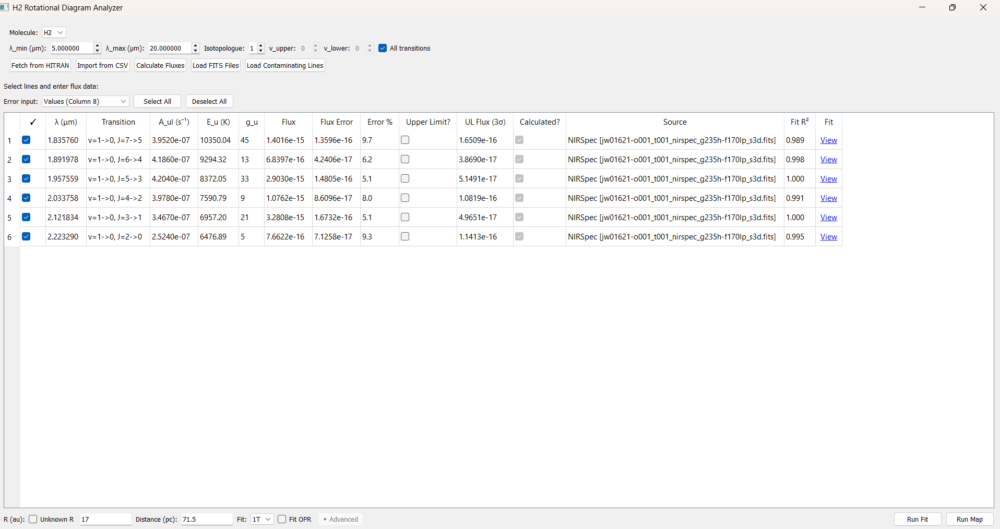
The line table – ☑, HITRAN columns, flux/error columns, and the Calculate-Fluxes-only columns described below – with Run Fit and Run Map at the bottom right.
The table shows every fetched/imported line, in three groups of columns:
☑, λ (μm), Transition, A_ul (s⁻¹), E_u (K), g_u — from HITRAN, not editable. ☑ controls whether the line is included in the fit.
Flux, Flux Error, Error %, Upper Limit? — enter by hand, or let Calculate Fluxes fill them in. A flux and either an absolute error or a percentage auto-calculate from each other as you type (toggle which one drives the calculation with the Error input dropdown above the table). Check Upper Limit? instead of entering an error for a non-detection.
UL Flux (3σ), Calculated?, Source, Fit R², Fit — only filled in by Calculate Fluxes:
UL Flux (3σ): the 3σ upper-limit flux for this line, computed the same way whether the line is a detection or not:
\[F_{UL} = 3 \sigma_{noise} \cdot \sigma \cdot \sqrt{2\pi}\]the same area formula every fit in this app uses (\(A \sigma \sqrt{2\pi}\)), but with \(3 \sigma_{noise}\) (three times the noise level) standing in for the fitted amplitude \(A\), and \(\sigma\) the line’s real instrumental width
Calculated?: checked if this row’s flux came from Calculate Fluxes rather than manual entry
Source: which instrument and FITS file the flux was measured from
Fit R²: quality of the underlying Gaussian fit, flagged red below 0.5 (the same threshold used elsewhere in the app)
Fit: click to open a plot of this line’s own fit (spectrum, baseline, fitted curve, flux, amplitude, R², FWHM), the same style as Multi-Gaussian Fit’s display

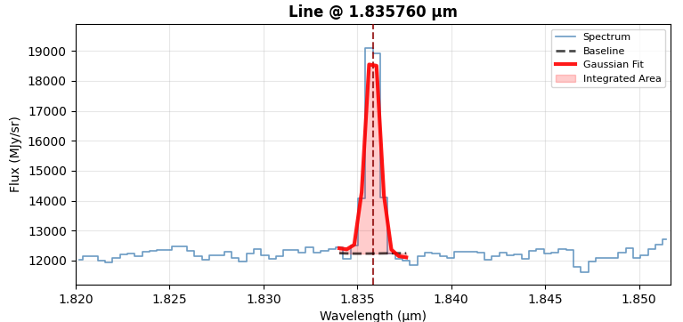
Clicking Fit for one row opens this plot – spectrum, fitted baseline, and the Gaussian fit shaded to show the integrated area.
Important
Detections need a flux error. A detection with no error entered is silently dropped from the fit rather than assigned a made-up default (you’ll get a popup listing which lines were excluded, if any). Upper limits are the exception: they don’t need an error, just the checkbox.
If any line is marked as an upper limit, the fit automatically switches from
curve_fit to a Bayesian censored regression that treats upper limits as one-sided
constraints rather than dropping them. The model itself is built in PyMC, but sampled
with nutpie, a faster compiled NUTS sampler –
the results text still labels diagnostics [PyMC: ...] since PyMC is what defines the
model either way.
How Calculate Fluxes measures a line
Flux error combines two terms in quadrature:
Statistical — from the error-propagation formula for \(\text{area} = A \sigma \sqrt{2\pi}\), assuming amplitude and sigma are uncorrelated:
\[\sigma_{area} = \sqrt{2\pi \left(\sigma^2 \sigma_A^2 + A^2 \sigma_\sigma^2\right)}\]using
curve_fit’s own covariance for \(\sigma_A\) and \(\sigma_\sigma\).Systematic — a fixed 5% of the flux, representing flux-calibration and continuum-estimation uncertainty that doesn’t shrink just because a particular fit was well-constrained.
A line is classified as an upper limit if its fitted flux doesn’t clear the 3σ threshold above. Calculate Fluxes auto-checks Upper Limit? for those lines, though you can still override the checkbox by hand afterward.
Step 3: Set Physical Parameters and Fit Options
R (AU) — emitting region radius. Check Unknown R to skip it entirely; Nu is then reported as a total molecule count rather than a column density.
Distance (pc)
Fit — 1T or 2T
Fit OPR — grid-search the ortho-to-para ratio to minimize χ² instead of assuming the fixed equilibrium value OPR = 3. Only affects H2 S-branch lines. Click ▶ Advanced to override the search grid (default: OPR from 0.1 to 3.0 in 400 steps).
Step 4: Run Fit → Results
Click Run Fit. The results window shows both text and a plot:
Detections — black points with error bars
Upper limits — red downward-pointing arrows (no error bar, since the constraint is one-sided)
1T mode: a single dashed line through the points
2T mode: dotted Warm/Hot lines for each component, plus a solid red 2-component model line for their sum
Y-axis is log10(Nu / gu), not natural log, despite the fit internally working in ln space
If Fit OPR was checked, the text results also report the best-fit OPR and its 1σ range.
When any line is an upper limit, the censored (PyMC) fit also reports its own convergence
diagnostics: divergence(s) (ideally 0) and max r_hat (should be at most 1.01), so a
fit that struggled to sample doesn’t look identical to one that converged cleanly.
Run Map, next to Run Fit, repeats this exact fit at every pixel of the loaded cube instead of once on the whole-cube summed spectrum – see Creating a Rotational Diagram Map below.
Worked Examples
The dataset here is the standard H2 v=0→0 S(1)–S(7) pure-rotational line set (5.5–17 µm),
imported from data/H2_lines.csv.

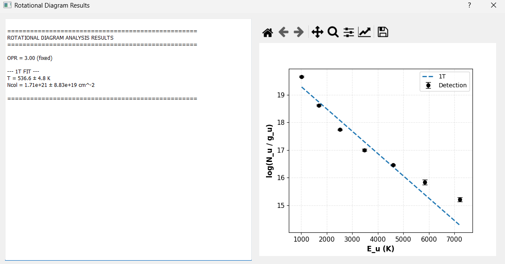
1T fit on all 7 lines: T = 536.6 ± 4.8 K. The single line can’t track the curvature, since the highest-Eu points sit well below it, which is exactly the signature that motivates using 2T here instead.

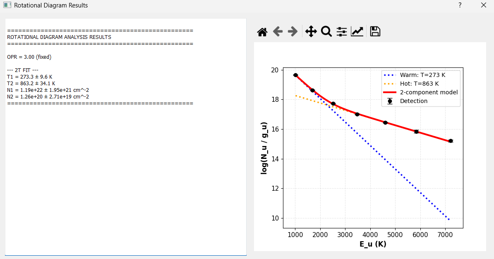
2T fit (OPR fixed at 3) on the same 7 lines: Warm (T = 273.3 ± 9.6 K) and Hot (T = 863.2 ± 34.1 K) components, tracking the curvature the 1T fit missed.

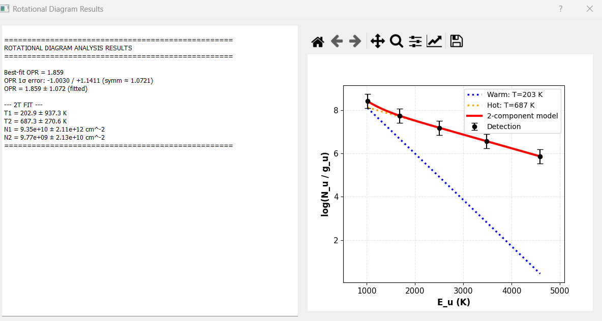
2T fit with Fit OPR enabled, on the 5 highest-Eu lines only and larger flux errors — a messier, more realistic case. The OPR search converged to 1.859 ± 1.072; with only 5 points feeding a 4-parameter 2T model plus OPR, T1’s own uncertainty balloons (202.9 ± 937.3 K) even though the fit still runs.

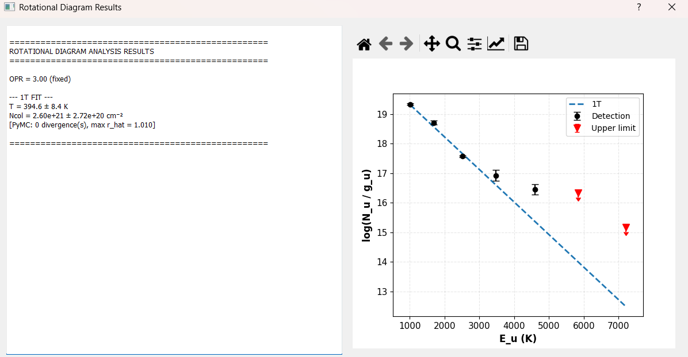
1T fit on data/H2_lines_noflux.csv (flux and flux error left blank for every line;
each is instead measured via Calculate Fluxes): 6 lines measured, 4 clearing the 3σ
threshold as detections and 2 falling below it, auto-marked as upper limits (red arrows).
T = 394.6 ± 8.4 K. The results text reports [PyMC: 0 divergence(s), max r_hat = 1.010]
since marking any line as an upper limit switches this to the censored PyMC fit
automatically.

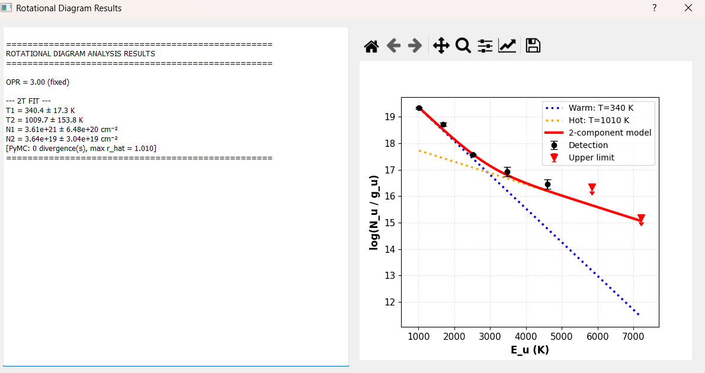
2T fit on the same dataset: Warm (T = 340.4 ± 17.3 K) and Hot
(T = 1009.7 ± 153.8 K) components, again via the censored PyMC fit
(max r_hat = 1.010).
Creating a Rotational Diagram Map
Run Map repeats the same fit at every spaxel instead of once on the whole-cube summed spectrum. It uses the same line selection (☑), flux/error values or Calculate Fluxes measurements, and physical parameters (R, distance, 1T/2T, Fit OPR) as Run Fit – the only difference is that the fit runs independently at every pixel.
Run Fit and Run Map sit side by side at the bottom right, sharing the same line table, flux data, and physical parameters above them.
Per-pixel detection gating
At each pixel, only lines whose flux clears the 3σ threshold at that specific pixel count as detections; a pixel needs at least the configured minimum number of detected lines (3 by default) before a fit is attempted there. Every pixel ends up in exactly one status:
Fitted – enough lines detected, and the fit converged
No data – no valid spectrum at this pixel (e.g. outside the cube’s footprint)
Too few lines – some lines detected, but fewer than the minimum required
Fit failed – enough lines were detected, but the fit itself didn’t converge
Worked example, the H2 S(1)-S(7) line set (data/H2_lines_rotdiagmap.csv) fit at every
pixel of a 55×53 NIRSpec cube (2,915 spaxels total). The whole-cube summed-spectrum fit
(the same number Run Fit would give) is T = 1721.8 ± 70.1 K, Ncol = 3.57e+18 ± 6.99e+17
cm⁻² – one number averaging over everything the per-pixel map below resolves spatially:
Pixel status |
Count |
|---|---|
Fitted (of which pinned at the 3000 K ceiling: 104) |
630 (21.6%) |
Not fitted – no data |
1,479 |
Not fitted – too few lines (< 3 detections) |
806 |
Not fitted – fit failed |
0 |

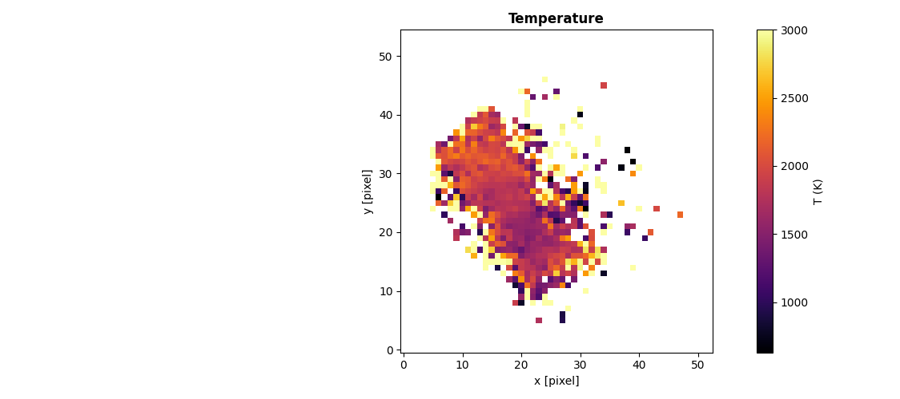
Temperature map. Median 1892.4 K across fitted pixels (std 587.1 K, range 629.8-3000 K) – values that would exceed 3000 K are pinned at that ceiling rather than left unbounded.

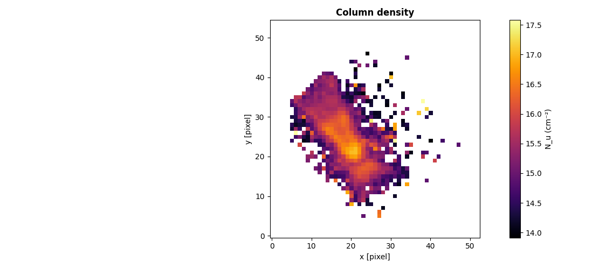
Column density (Nu) map, log scale. Median 2.054e+15 cm⁻² (range 8.196e+13-3.803e+17 cm⁻²).

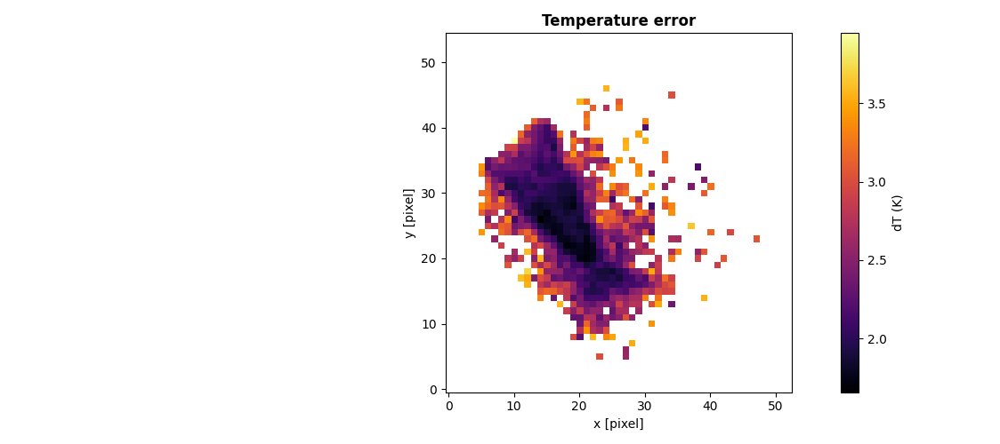
Temperature uncertainty (dT), log scale.

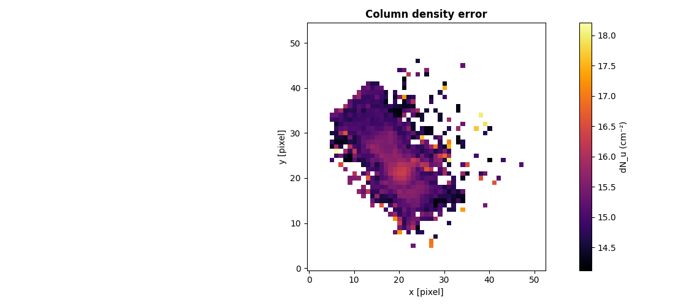
Column density uncertainty (dNu), log scale.

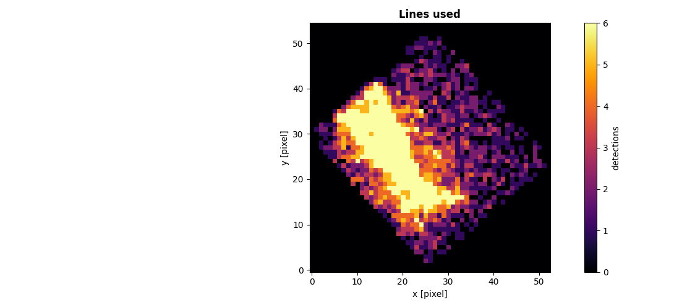
Lines used per fitted pixel. Median 5.0 (range 3-6) – the diamond-shaped footprint reflects this NIRSpec cube’s rotated field of view, not a bug in the fit.

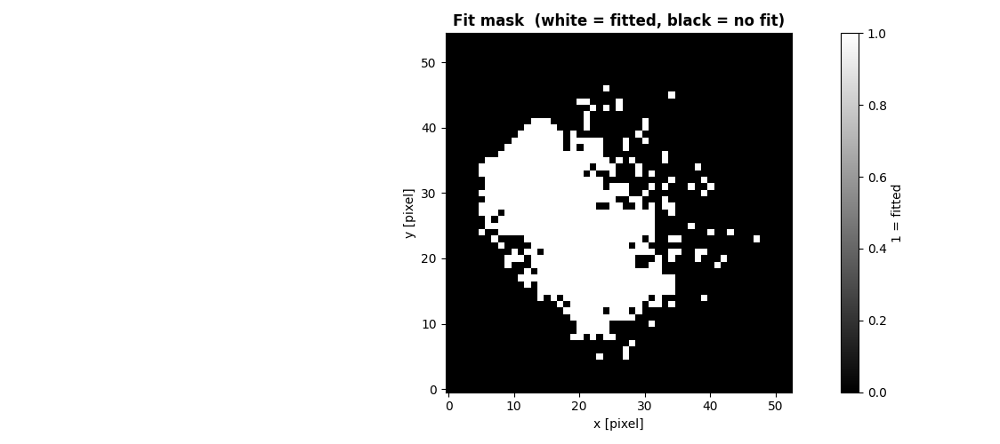
Fit mask: white = fitted, black = not fitted (no data or too few lines).
Inspecting a single pixel
Clicking a pixel on any of the maps above re-fits just that pixel from the per-line flux maps already built during Run Map – cheap, since it reuses that cached data instead of redoing any line fitting – and opens the same style of results plot Run Fit shows for the whole cube.

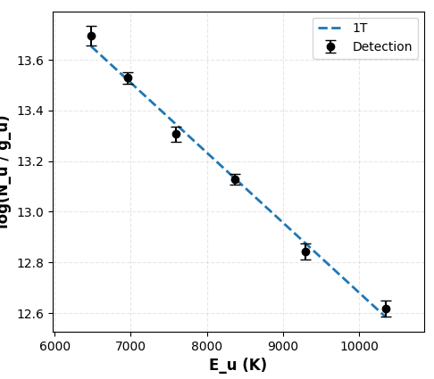
Pixel (21, 21): T = 1571.5 ± 53.5 K, Ncol = 1.10e+17 ± 1.99e+16 cm⁻², 6 lines used – an individual pixel’s fit, same style as the whole-cube Run Fit plot above.
Using the API
rotational_diagram() is not a separate wrapper — it’s the exact function the GUI calls,
imported directly. There’s no GUI/API divergence to account for here, unlike flux extraction above.
from cube_explorer.api import rotational_diagram
# H2 v=0->0 S(1)-S(7), matching data/H2_lines.csv, matched against HITRAN
molecular_data = {
'wavelengths': {1: 17.034846, 2: 12.278612, 3: 9.664911, 4: 8.025041,
5: 6.909509, 6: 6.108564, 7: 5.511183},
'Aul': {1: 4.758e-10, 2: 2.753e-9, 3: 9.83e-9, 4: 2.641e-8,
5: 5.876e-8, 6: 1.141e-7, 7: 2.0e-7},
'Eu': {1: 1015.947, 2: 1683.068, 3: 2505.873, 4: 3477.452,
5: 4589.958, 6: 5834.798, 7: 7202.827},
'gu': {1: 7, 2: 9, 3: 11, 4: 13, 5: 15, 6: 17, 7: 19}, # bare 2*J_upper+1;
# apply_OPR() applies the ortho/para nuclear-spin weighting on top of this
}
result = rotational_diagram(
fluxes={1: 178e-16, 2: 55.9e-16, 3: 122e-16, 4: 28.4e-16,
5: 72.3e-16, 6: 14.4e-16, 7: 22.2e-16},
flux_errors={1: 9e-16, 2: 3.2e-16, 3: 6.3e-16, 4: 2.4e-16,
5: 4e-16, 6: 3.2e-16, 7: 3.8e-16},
molecular_data=molecular_data,
R=8.5, # AU
dist=71.5, # pc
fit2T=True,
)
print(f"1T Temperature: {result['1T']['T']:.1f} K")
print(f"2T Temperatures: {result['2T']['T1']:.1f} K, {result['2T']['T2']:.1f} K")
This reproduces the first worked example above exactly (273.4 K / 863.4 K).
Important
A 2T fit has 4 free parameters, so you need meaningfully more than 4 lines for the fit
(and its uncertainties) to mean anything. Passing fit2T=True with too few points
doesn’t raise an error; it just returns a bad fit.
Run Map, from a script
fit_region, fit_pixel, and create_rotational_diagram_map are the same functions
the GUI’s Run Fit / Run Map buttons call, for one cube:
from cube_explorer.api import (
load_cube, fetch_hitran_data, fit_region, fit_pixel,
create_rotational_diagram_map, save_rotational_diagram_map_fits, STATUS_OK,
)
cube = load_cube("data.fits")
line_table, _ = fetch_hitran_data(2.87, 5.27, "H2", isotopologue=1, v_upper=1, v_lower=0)
# Same fit as Run Fit -- sums the whole cube (pass mask=... to sum only some pixels)
region = fit_region(cube, line_table, min_lines=3)
if region["status"] == STATUS_OK:
print(f"Whole-cube T: {region['results']['1T']['T']:.1f} K")
# One pixel's own fit
pixel = fit_pixel(cube, 20, 25, line_table, min_lines=3)
# Same fit as Run Map -- every pixel, run in parallel
result = create_rotational_diagram_map(cube, line_table, min_lines=3, n_jobs=8)
save_rotational_diagram_map_fits(result, "rot_diag_map.fits")
On a real NIRSpec cube (37 H2 v=1→0 lines, 55×53 pixels), this fits 877/2915 pixels;
fit_region sums all 2915 into T = 3000.0 ± 49.7 K (pinned at the ceiling – this
particular v=1→0 hot-band set doesn’t constrain a clean rotational diagram the way the
S(1)–S(7) pure-rotational set does above); fit_pixel at (20, 25) finds 8 lines
individually, one more than the whole-cube sum found.
Run Map, multiple cubes at different pixel scales
fit_region_multi, create_rotational_diagram_map_multi, and fit_pixel_multi are
the multi-source equivalents, one line per cube, for cubes of different pixel scale or
shape (see Creating a Rotational Diagram Map above for what happens internally):
from cube_explorer.api import (
load_cube, create_rotational_diagram_map_multi, fit_pixel_multi, STATUS_OK,
)
cubes_and_lines = [
(load_cube("miri_ch1_long.fits"), {"wavelength": 6.909509, "a_coeff": 4.758e-10,
"e_upper": 1015.947, "Gp": 21,
"branch": "S", "j_lower": 5}),
(load_cube("miri_ch2_long.fits"), {"wavelength": 10.177803, "a_coeff": 1e-8,
"e_upper": 3000.0, "Gp": 11,
"branch": "S", "j_lower": 3}),
]
result = create_rotational_diagram_map_multi(cubes_and_lines, min_lines=2, n_jobs=4)
print(f"Common grid: {result['T'].shape}, worst pixel scale: "
f"{result['worst_pix_arcsec']:.3f} arcsec")
# Re-fit one pixel from the cached per-line maps instead of rerunning the whole map
refit = fit_pixel_multi(result, 21, 18, min_lines=2)
Real HH30 MIRI ch1-long/ch2-long data, two H2 lines: the common grid comes out at
37×43 – different from either input cube’s own shape (33×39 and 31×37) – at the
worst (ch2-long’s) pixel scale, 0.170 arcsec. With only 2 lines total and one of them
below the 3σ threshold across most of the field, no pixel here reaches STATUS_OK;
the example is real and runs end-to-end, but this particular line pair is too thin to
constrain a temperature anywhere. A real map needs several well-detected lines per source.
Next Steps
Flux Extraction — a different molecule’s line fluxes, fit the same way
Pixel-by-Pixel Cube Fitting — the per-pixel Gaussian fitting Calculate Fluxes shares its algorithm with
Exporting Data — other export paths